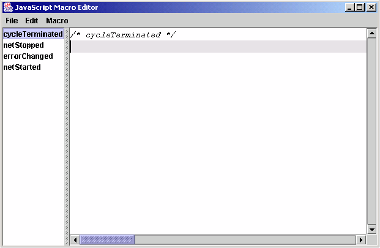
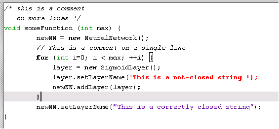

A powerful scripting
management engine is provided in the Joone Editor. Before describing
this feature, it is important to understand the concepts underlying the
scripting engine.
|
Event-driven scripts |
These are executed when a neural network’s event is raised. |
|
User-driven scripts |
These are executed manually by the user. |
Both of the above type of scripts are contained within the neural network, and are serialized, stored and transported along with the neural network that contains them (in the same way that macros defined in a MS Word© of Excel© document are). In this manner the defined scripts can be executed even when the net is running on remote machines outside the GUI editor.
It is possible to load, edit, save and run any script (in this document also referred to as Macro) using a user friendly graphical interface. The Macro Editor can be opened with the Control->Macro Editor menu item. A window will be shown, as depicted in the following figure:

In the Macro Editor, the user can define both of the two script types. On the left side of the editor there is the list of the available scripts for the neural network. For a new network, the list already contains the definitions of all the available event-driven scripts. To edit a script, the user simply clicks on the desired script on the list and inserts the code in the text area on the right.
The text area has some useful features to help with the writing of the BeanShell code:

Note in the above figure
the bold Java keywords “new” and “for”, the small box
indicating the corresponding open bracket matching the one near to the
cursor, the greyed row indicating the current edited row, and the red
colour used to indicate an unterminated string.
The event-driven scripts can not be renamed nor deleted from the
list. If the user does not want to define an event-driven
script, s/he can just remove or comment the corresponding code in the
text area.
The user-driven scripts can be added, renamed or deleted by choosing the corresponding menu item in the ‘Macro’ menu.
Here are details of all the menu items of the Macro Editor frame.
File
Import Macro The content of a text file can be imported into the text area of the selected script. The old text will be replaced.
Save Macro as… The content of the selected script can be exported into a text file.
Close Closes the Macro Editor window.
Edit
Cut Copies the selected text into the clipboard and delete it from the text area (you can also use Ctrl-X).
Copy Copies the selected text into the clipboard (you can also use Ctrl-C).
Paste Pastes the content of the clipboard into the text area starting at the cursor position (you can also use Ctrl-V).
Select All Selects all the content of the text area.
Macro
Enable Scripting If checked, this enables the execution of the event-driven scripts for the edited neural network. If not checked, all the events of the net will be ignored.
Add Adds a new user-driven script (the user cannot insert new event-driven scripts).
Remove Removes the selected user-driven script. Disabled for event-driven scripts.
Rename Permits renaming of the selected user-driven script. Disabled for event-driven scripts.
Run Runs the selected script.
Set Rate… Sets the execution rate (the number of free training cycles between two execution calls) for cyclic event-driven scripts. The cyclic event-driven scripts are the ‘cycleTerminated’ and the ‘errorChanged’ scripts.
Warning:The default value of rate for a new network is 1 (one), but it is recommended tat the value be set to between 10 and 100 (or even more) to ensure that there is sufficient processing time available for the running of neural network.
The following section describes some characteristics of the scripting feature added to Joone’s engine.
How to use internal Joone objects
To obtain a reference to the internal neural network’s objects use:
jNet to access to the edited org.joone.net.NeuralNet object
jMon to access to the contained org.joone.engine.Monitor object
For example:
jNet.getLayers().size() returns the number of the layers contained in the neural network.
jMon.getGlobalError() returns the last RMSE value from the net.
A list of the callable public methods for the above two objects is available in the project’s javadoc html files. To use the objects from the Joone libraries, it is not necessary to import the corresponding package. The following packages are imported automatically for you by the script’s engine:
For instance, to create a new sigmoid layer, simply write:
newLayer = new SigmoidLayer();
How to call another script from within a macro
Within a macro it is
possible to call another script contained in the neural network (both user
and event-driven scripts).
To do this, use the following code:
The scope of the script’s variables
All the scripts defined in
a neural network (both user and event-driven scripts)
share the same namespace and actual-values storage. Thus a global
variable declared and initialised in script_A can be accessed in script_B.
For example:
For further details about scope and the use of variables, see the BeanShell manual.